概要
LINE Botを作りつつ、Messaging API(および周辺の技術)の基本的な使い方を学んでいただければと思います！
当日の持ち物
- LINEがインストール済みのスマホ
- ChromeがインストールされたPC（Chromeのバージョンは最新のものを使っていただければと！）
事前準備
- GitHubアカウント作成
- Google Cloud アカウント 作成
- LINEアカウント作成(こちらのサイトでログインできるかどうかを確認ください)
- (推奨) Google Chrome の最新版のインストール
使用するサービス・ツール
- Node.js
- GitHub
- (Google Cloud) Cloud Run
- (Google Cloud) Cloud Shell
構成図
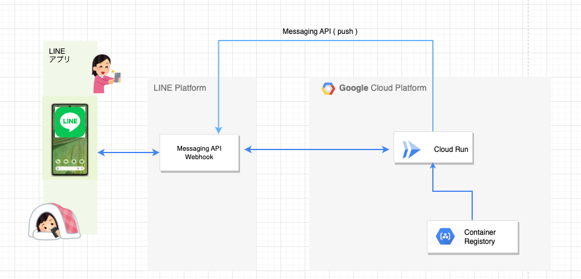
注意事項
若干、Amazon Web Servicesの課金が発生する可能性があります。それ以外は課金など発生しません。
チャネルの作成スタート
https://developers.line.me/ja/services/messaging-api/ にアクセス。
「今すぐはじめよう」のボタンを押して進めていきましょう。

「LINEアカウントでログイン」を押してください。

LINEのログインを求められるのでログインしてください。

チャネルの種類
Messaging APIになっているか確認します。

プロバイダ
既にプロバイダーを作っている場合 → 利用するプロバイダーを選択しましょう。

初めて → 新規プロバイダー作成を選択しプロバイダー名を入力しましょう。
（LINEという文字は含められません。）

会社・事業者の所在国・地域

チャネルアイコン
チャネルアイコンを登録しましょう。（今回は必須ではありません）

チャネル名、チャネル説明
下記を入力しましょう。
チャネル名：「HandsonBot」
チャネル説明：「HandsonBotです。」

大業種、小業種

メールアドレス、プライバシーポリシーURL、サービス利用規約URL
メールアドレスを確認しましょう。
プライバシーポリシーURLとサービス利用規約URLは入力しなくても大丈夫です。

作成ボタン
下記２点の利用規約にチェックをして「作成」ボタンを押しましょう。

「OK」を押しましょう。
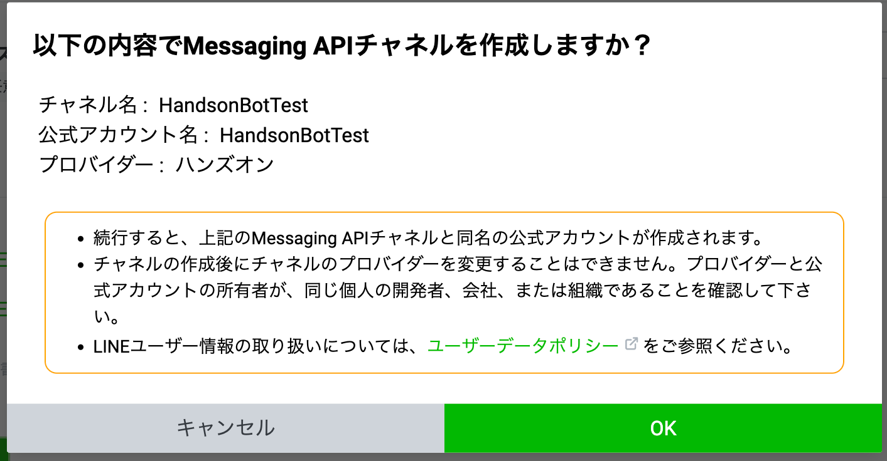
「同意する」を押しましょう。

LINE公式アカウント(LINE Bot)と友だちになる
QRコードで友だち追加
「Messaging API設定」タブに移動し、QRコードを読み取って、友だち追加をしましょう。

チャネルシークレット、アクセストークンの取得
「チャネル基本設定」タブからチャネルシークレットを、「Messaging API設定」タブからアクセスキーをそれぞれ取得します。
- チャネルシークレット
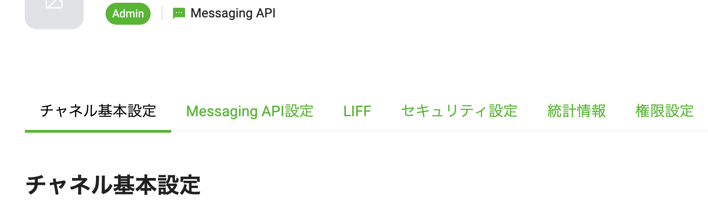

- アクセストークン


応答モードをOFFにする
LINE Official Account Manager 画面にアクセスして、Botの「応答モード」設定をOFFにします。（デフォルトの設定はONになっており、メッセージを送るたびにデフォルトのメッセージが返ってきてしまうため）
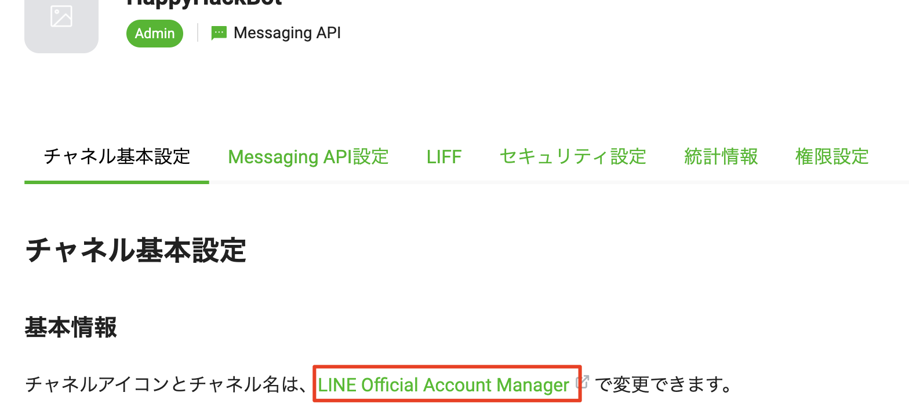

GCP側の設定
- Google Cloud の コンソールにログイン： https://console.cloud.google.com/
- 日本語に変更するやり方：右上のケバブをクリックしてナビゲーションバーを開く > Preferences > Language & region > Languageを日本語にする > 保存
プロジェクト作成
- ヘッダの「プロジェクトの選択▼」＞新しいプロジェクト
- プロジェクト名 ： Handson-LINE-Bot-GCP
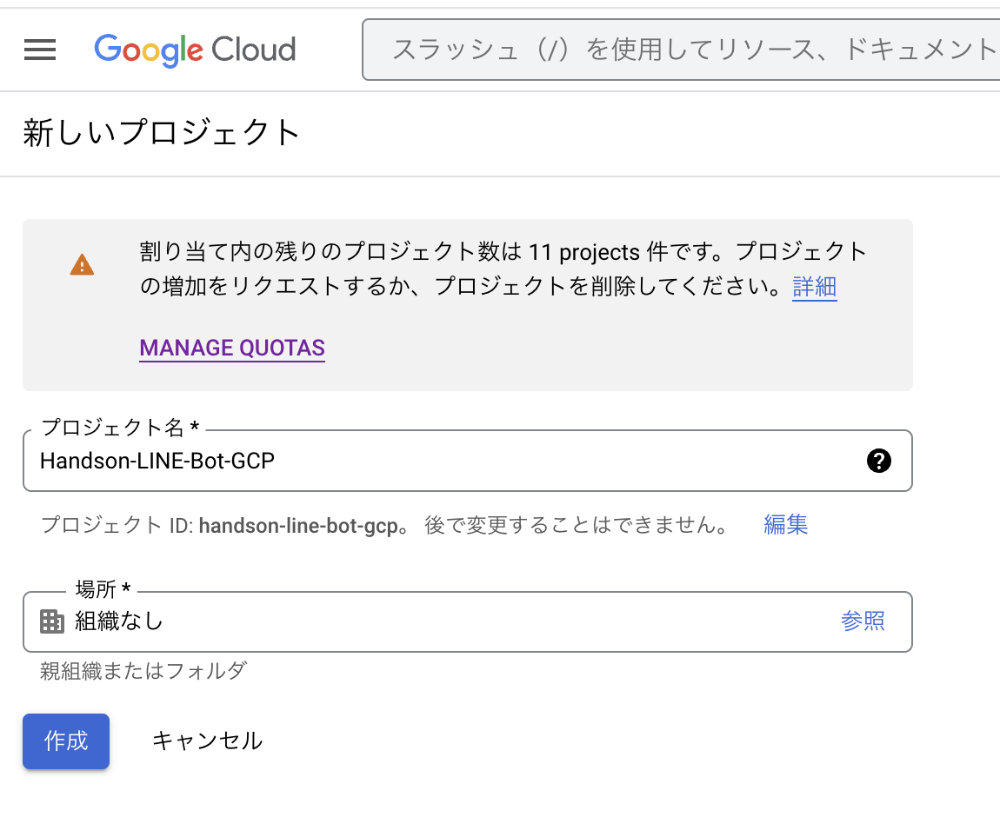
- 右上の ベルのアイコンをクリック > プロジェクト「Handson-LINE-Bot-GCP」を作成 〜 プロジェクトを選択 をクリックして、Handson-LINE-Bot-GCPのダッシュボードを開く
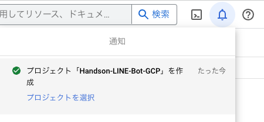
Cloud Runの有効化
- 画面左上のナビゲーションバーを開く > 「その他のプロダクト」 > [API とサービス] > [ライブラリ] を選択
- 検索バーに「Cloud Run」と入力し、検索結果のリストで Cloud Run API を選択
- プロジェクト「Handson-LINE-Bot-GCP」の課金の有効化、住所とクレジットカードの入力
- CLoud Run APIの[有効にする] をクリック。ブラウザの「戻る」を押すと、以下のように「APIが有効です」となっている
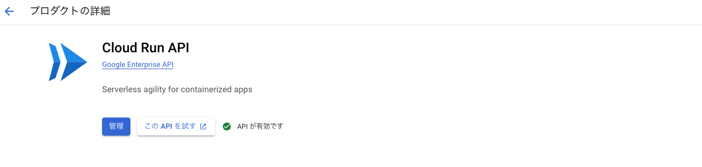
Cloud Shellの起動
- ヘッダのCloud Shellアイコンをクリック
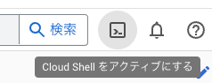
LINE公式サンプルコードをGitHubからClone
Cloud Shellターミナルで以下のコマンドを入力
- 実行するコマンド
$ git clone https://github.com/mochan-tk/Handson-LINE-Bot-Google-Cloud.git $ cd Handson-LINE-Bot-Google-Cloud
Cloud Shellのエディタでファイル編集
- Cloud Shell ターミナルの「エディタを開く」をクリック
- エディタの上を引っ張り上げると、面積を広げることができる
- 左ペインの 「Handson-LINE-Bot-Google-Cloud」 > 「Package.json」 を開いて編集
"name": "echo-bot",
↓
"name": "handson-line-bot-gcp-01" ,
- File＞「Auto Save」にチェックが入っていることを確認する。これが入っていればちゃんと自動保存される
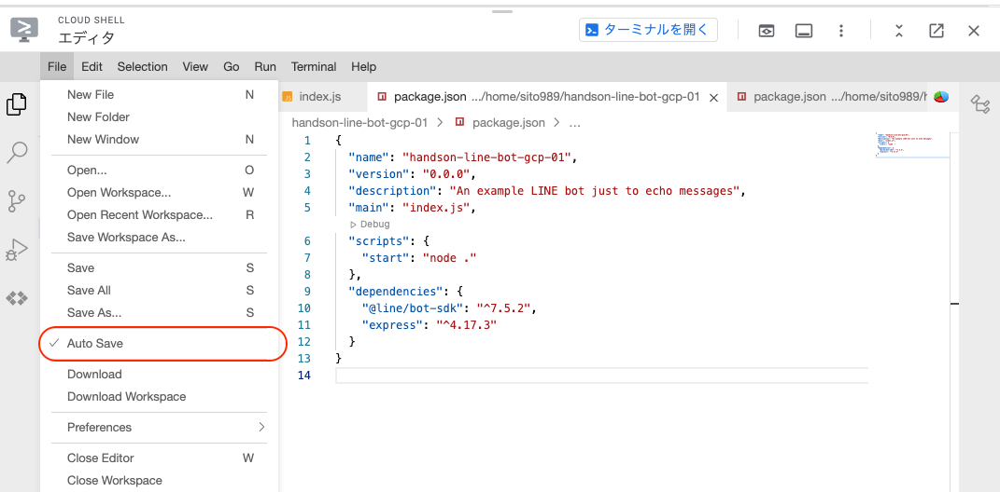
Dockerfileを書く
- 「Handson-LINE-Bot-Google-Cloud」フォルダ右クリック > メニュー一番上の New FIle をクリックし、"Dockerfile"(拡張子無し)という名前のファイルを作る
- 以下を記入
FROM node:12 WORKDIR /usr/src/app COPY package.json package*.json ./ RUN npm install --only=production COPY . . CMD [ "npm", "start" ]
- 1〜2秒で自動保存される
認証
- Cloud Shell ターミナルで以下を実行
- 以下を記入
$ gcloud auth login
- 「Do you want to continue (Y/n)? 」 には 「Y」 と入力
- 「Go to the following link in your browser:」 の https://〜 で始まる長いURLをクリックするとブラウザが開くので、Google メールアドレスで認証→許可。
- 以下のような画面が表示されるので、copyをクリックして、verification codeをコピーする
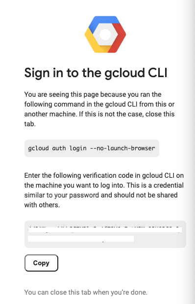
- Cloud Shellのターミナルに戻り、 「Enter authorization code: 」 のプロンプトに、上でゲットしたverification code をペーストして、エンター
- 「You are now logged in as〜」と表示されればOK
Cloud Strage作成
画像のメッセージ形式を扱うためストレージサービスを使います。準備としてバケットの作成をしておきます。
- Cloud Shell ターミナルで以下を実行
$ cd ~/Handson-LINE-Bot-Google-Cloud
## xxxxのところはお名前などを入れてバケット名が一意な名前になるようにしてください
$ BUCKET_NAME=20230204xxxx-image-bucket
$ gsutil mb -b on -l asia-northeast1 gs://${BUCKET_NAME}
$ gsutil iam ch allUsers:objectViewer gs://${BUCKET_NAME}
コンテナをビルドし、Container Registoryへ格納
- Cloud Shell ターミナルで以下を実行
$ cd ~/Handson-LINE-Bot-Google-Cloud $ gcloud builds submit \ --tag gcr.io/$GOOGLE_CLOUD_PROJECT/handson-line-bot-gcp-01
- 「Cloud Shellの承認」というポップアップが出るので「承認」をクリック
- 「API [cloudbuild.googleapis.com] not enabled on project [99670530964]. Would you like to enable and retry (this will take a few minutes)? (y/N)?」 と表示されたら、「y」を入力
- 1〜2分かかりますので、ストレッチでもしましょう
- STATUS: SUCCESSで終了すればOK

Cloud Runへデプロイ
- Cloud Shell ターミナルで以下を実行
$ CHANNEL_ACCESS_TOKEN=ここにチャネルアクセストークンを記入（ダブルクウォートなどで囲む必要なし) $ CHANNEL_SECRET=ここにチャネルシークレットを記入（ダブルクウォートなどで囲む必要なし) $ gcloud run deploy handson-line-bot-gcp-01 \ --image gcr.io/$GOOGLE_CLOUD_PROJECT/handson-line-bot-gcp-01 \ --set-env-vars "CHANNEL_ACCESS_TOKEN=$CHANNEL_ACCESS_TOKEN" \ --set-env-vars "CHANNEL_SECRET=$CHANNEL_SECRET" \ --set-env-vars "BUCKET_NAME=$BUCKET_NAME" \ --platform managed \ --region asia-northeast1 \ --allow-unauthenticated \ --max-instances=1
- （トラブルシュート）「CHANNEL_ACCESS_TOKEN = 」のようにイコールの前や後に空白が入ると失敗する
- 成功すると以下のようなOKメッセージが表示されるので、Service URLをメモ帳などにコピーしておく
OK Deploying... Done. OK Creating Revision... OK Routing traffic... OK Setting IAM Policy... Done. Service [line-bot-gcp-01] revision [line-bot-gcp-01-00002-has] has been deployed and is serving 100 percent of traffic. Service URL: https://line-bot-gcp-01-hogehogehoge-uc.a.run.app ←これをコピー
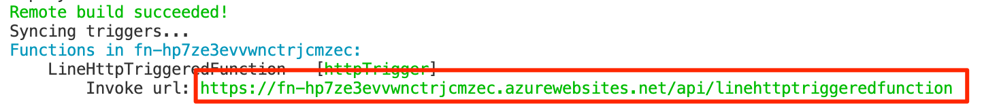
- （トラブルシュート）シークレットの変数の代入わすれ
URLの動作確認
- ブラウザで、上記でゲットしたService URLにアクセス
- 以下のように「Cannot GET /」と表示されればOK！
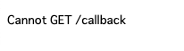
Webhookの設定
LINE Developersのコンソール画面に戻って、「Messaging API設定」タブから上記で取得したCloud RunのService URL + 「/callback」を設定します。これでLINEのBotを動かす準備は全て整いました！
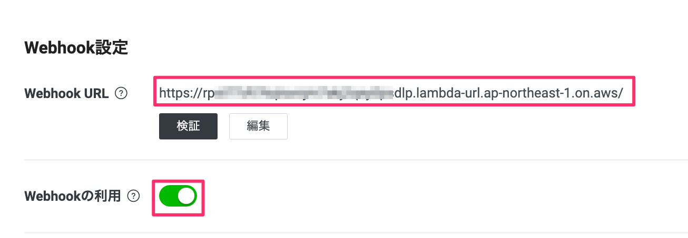
動作確認
さっそく動かしてみましょう。トーク画面からBotに対してメッセージを送るとオウム返しでメッセージが送られてきたと思います！

LINE Official Account Manager 画面でリッチメニューの設定
LINE公式アカウントの管理画面にアクセスし、リッチメニューを作成していきます。まずは「ホーム」→「リッチメニュー」→「作成」をクリックします。

「基本設定」の項目を入力し、その後テンプレートの選択を行います。

ここでは４つのフレームに別れたテンプレートを選択します。

次にリッチメニューに使用する画像を作成します。「画像を作成」ボタンから、４つのフレームに対してそれぞれテキストを入力し、最後に右上の適用ボタンを押してください。
場所 | 入力するテキスト |
左上 | camera |
右上 | 位置情報 |
左下 | Flex |
右下 | Quick Reply |

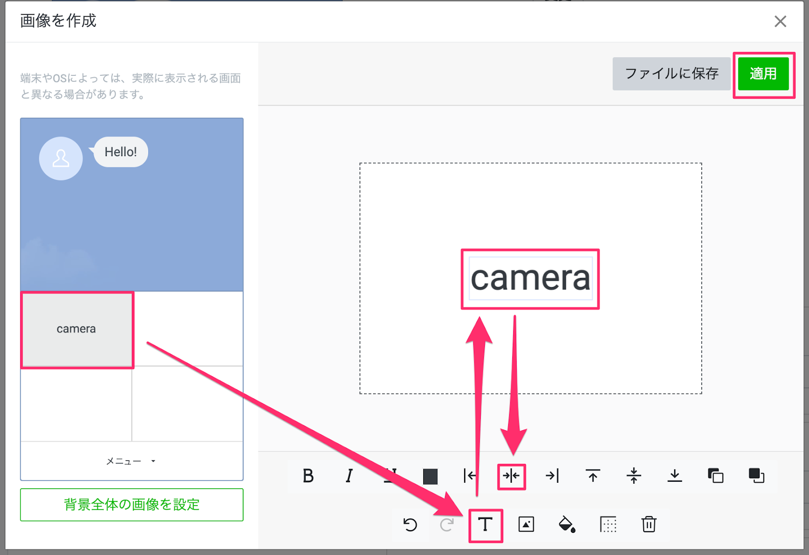

次にアクションの項目を下記の情報を参考に埋めていきます。最後に保存ボタンを押すのをお忘れなく。
番号 | タイプ | 入力欄 | ラベル |
A | リンク | https://line.me/R/nv/camera/ | camera |
B | リンク | https://line.me/R/nv/location/ | location |
C | テキスト | flex | なし |
D | テキスト | quick | なし |

LINE公式アカウント(LINE Bot)上は下記のようになります。
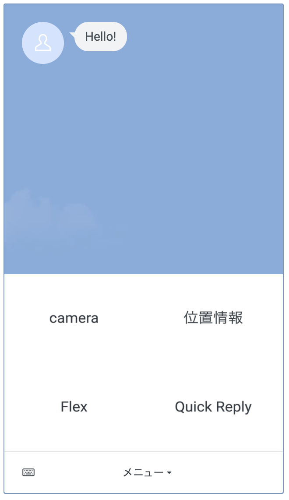
（参考）Messaging APIでのリッチメニューを作成
リッチメニューはMessaging APIでも作成でき、さらに柔軟な対応が可能です。今回のハンズオンの後半（『リッチメニュー応用』）で扱っていきます。
下記に参考情報も記載いたします。
下記を参考にコマンドくを実行し、複数のリッチメニューを切り替えます。
- リッチメニューA（richmenu-a）を作成する
curl -v -X POST https://api.line.me/v2/bot/richmenu \
-H 'Authorization: Bearer '${MSG_CHANNEL_ACCESS_TOKEN} \
-H 'Content-Type: application/json' \
-d \
'{
"size": {
"width": 2500,
"height": 1686
},
"selected": false,
"name": "Hands On Menu A",
"chatBarText": "Tap to open",
"areas": [
{
"bounds": {
"x": 1250,
"y": 0,
"width": 1250,
"height": 50
},
"action": {
"type": "richmenuswitch",
"richMenuAliasId": "hands-on-richmenu-alias-b",
"data": "richmenu-changed-to-b"
}
},
{
"bounds": {
"x": 0,
"y": 70,
"width": 1250,
"height": 750
},
"action": {
"type": "uri",
"uri": "https://line.me/R/nv/camera/"
}
},
{
"bounds": {
"x": 1250,
"y": 70,
"width": 1250,
"height": 750
},
"action": {
"type": "uri",
"uri": "https://line.me/R/nv/location/"
}
},
{
"bounds": {
"x": 0,
"y": 830,
"width": 1250,
"height": 800
},
"action": {
"type": "message",
"text": "flex"
}
},
{
"bounds": {
"x": 1250,
"y": 830,
"width": 1250,
"height": 800
},
"action": {
"type": "message",
"text": "quick"
}
}
]
}'- 返ってきたリッチメニューIDをコピーし、下記コマンドを実行します。
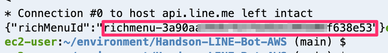
RICHMENU_ID_A=< リッチメニューID >- リッチメニューAに画像をアップロードする
curl -v -X POST https://api-data.line.me/v2/bot/richmenu/${RICHMENU_ID_A}/content \
-H 'Authorization: Bearer '${MSG_CHANNEL_ACCESS_TOKEN} \
-H "Content-Type: image/png" \
-T richmenu/tabA.png- リッチメニューB（richmenu-b）を作成する
curl -v -X POST https://api.line.me/v2/bot/richmenu \
-H 'Authorization: Bearer '${MSG_CHANNEL_ACCESS_TOKEN} \
-H 'Content-Type: application/json' \
-d \
'{
"size": {
"width": 2500,
"height": 1686
},
"selected": false,
"name": "Hands On Menu B",
"chatBarText": "Tap to open",
"areas": [
{
"bounds": {
"x": 0,
"y": 0,
"width": 1250,
"height": 50
},
"action": {
"type": "richmenuswitch",
"richMenuAliasId": "hands-on-richmenu-alias-a",
"data": "richmenu-changed-to-a"
}
},
{
"bounds": {
"x": 0,
"y": 70,
"width": 1250,
"height": 750
},
"action": {
"type": "uri",
"uri": "https://line.me/R/nv/camera/"
}
},
{
"bounds": {
"x": 1250,
"y": 70,
"width": 1250,
"height": 750
},
"action": {
"type": "uri",
"uri": "https://line.me/R/nv/location/"
}
},
{
"bounds": {
"x": 0,
"y": 830,
"width": 1250,
"height": 800
},
"action": {
"type": "message",
"text": "flex"
}
},
{
"bounds": {
"x": 1250,
"y": 830,
"width": 1250,
"height": 800
},
"action": {
"type": "message",
"text": "quick"
}
}
]
}'- 返ってきたリッチメニューIDをコピーし、下記コマンドを実行します。
RICHMENU_ID_B=< リッチメニューID >- リッチメニューBに画像をアップロードする
curl -v -X POST https://api-data.line.me/v2/bot/richmenu/${RICHMENU_ID_B}/content \
-H 'Authorization: Bearer '${MSG_CHANNEL_ACCESS_TOKEN} \
-H "Content-Type: image/png" \
-T richmenu/tabB.png- リッチメニューAをデフォルトのリッチメニューにする
curl -v -X POST https://api.line.me/v2/bot/user/all/richmenu/${RICHMENU_ID_A} \
-H 'Authorization: Bearer '${MSG_CHANNEL_ACCESS_TOKEN}- リッチメニューエイリアスAを作成する
curl -v -X POST https://api.line.me/v2/bot/richmenu/alias \
-H 'Authorization: Bearer '${MSG_CHANNEL_ACCESS_TOKEN} \
-H 'Content-Type: application/json' \
-d \
'{
"richMenuAliasId": "hands-on-richmenu-alias-a",
"richMenuId": "'"${RICHMENU_ID_A}"'"
}'- リッチメニューエイリアスBを作成する
curl -v -X POST https://api.line.me/v2/bot/richmenu/alias \
-H 'Authorization: Bearer '${MSG_CHANNEL_ACCESS_TOKEN} \
-H 'Content-Type: application/json' \
-d \
'{
"richMenuAliasId": "hands-on-richmenu-alias-b",
"richMenuId": "'"${RICHMENU_ID_B}"'"
}'リッチメニューのエラーは下記を確認してください。
https://developers.line.biz/ja/reference/messaging-api/#create-rich-menu-alias-error-response
トーク画面から一旦離れ、確認します。
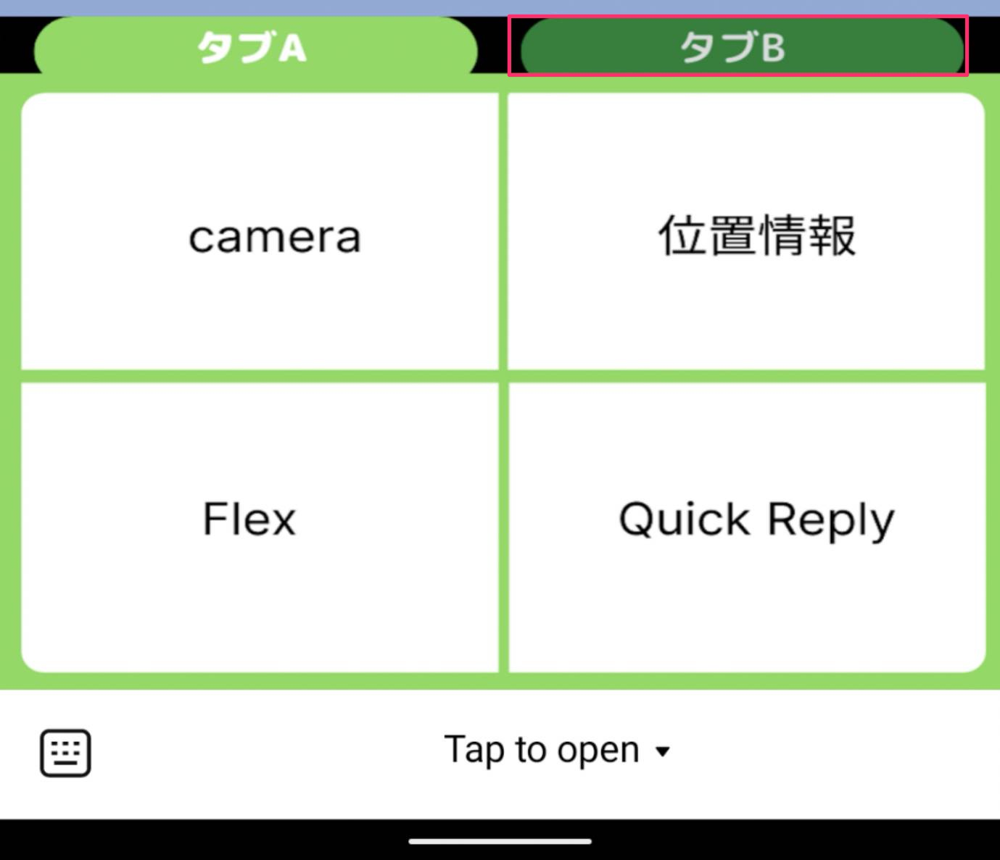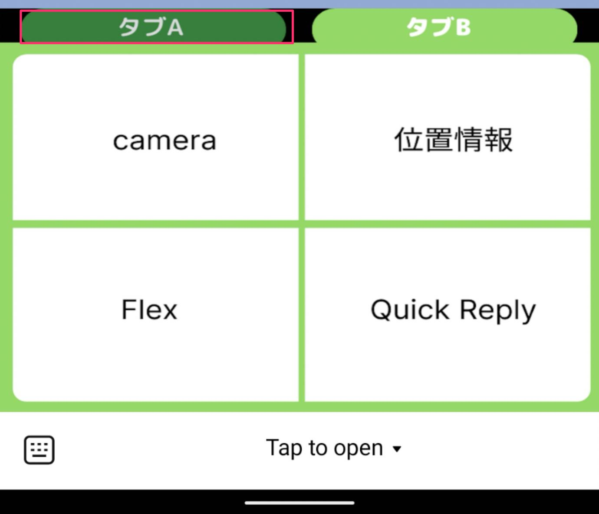
URLスキームを使うとカメラや位置情報などが起動できたりします、いくつか用意されていますので試していきましょう。
カメラの起動
リッチメニュー左上の「camera」をタップしてください。カメラが起動します。

位置情報の起動
リッチメニュー右上の「位置情報」をタップしてください。位置情報が起動します。
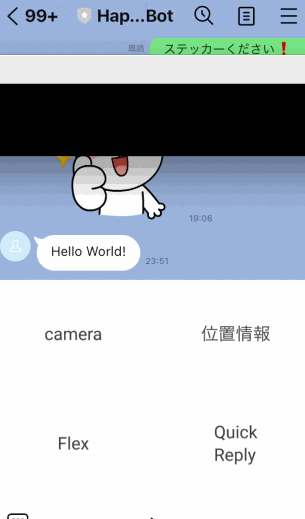
LINEでは様々なメッセージ形式を扱うことができます。
今回のコードも見ていただくと理解がグッと進みます。
画像メッセージを扱う
カメラを起動して写真を撮るか既に撮った写真を選択するかで、画像をトーク画面に投稿してみてください。送った画像をそのまま返すコードを今回用意しました。

位置情報メッセージを扱う
位置情報をトーク画面に投稿してみてください。全く同じ位置情報メッセージが返ってくると思います。

音声メッセージを扱う
マイクから音声を投稿してみてください。音声メッセージが返ってきます。

Flex Messageを扱う
リッチメニューの左下をタップして、「flex」というテキストメッセージを投稿します。するとちょっとリッチなUIが返ってくると思います。これがFlex Messageです。Flex Message Simulator が用意されており、レイアウトを簡単にカスタマイズすることができます。（詳細はコチラを参照ください。）

Quick Replyを扱う
クイックリプライを使うとユーザは簡単に返信を行うことができます。

Cloud Strage : バケットを削除する
- 左上のナビゲーションバー > Cloud Strage > 作成したバケット名にチェックを入れて「削除」
Container Registory : コンテナを消す
- 左上の..Container Registory > イメージ > handson-line-bot-gcp-01 > コンテナにチェックを入れて 「削除」
Cloud Run: アプリを消す
- 左上のナビゲーションバー > Cloud Run > handson-line-bot-gcp-01 にチェックを入れて「削除」